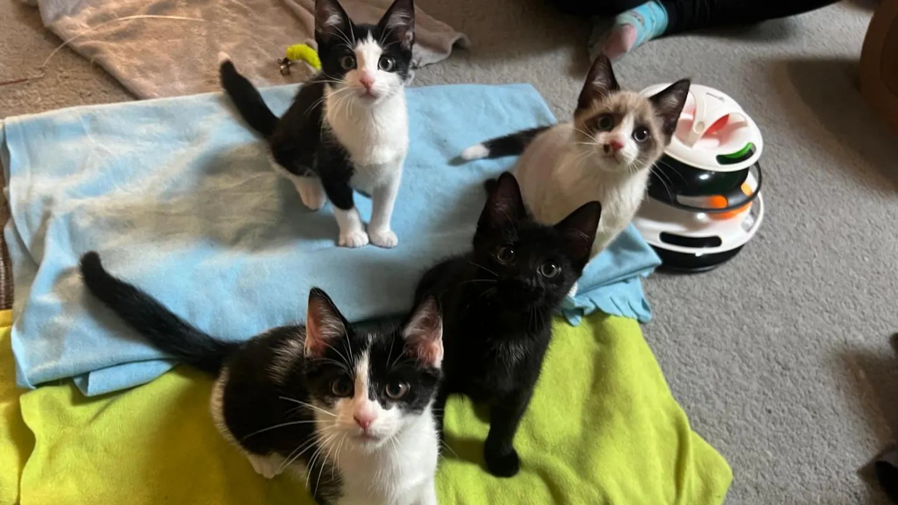

Cat cafe gives a home to four new rescue kittens
A cat cafe has adopted four new rescue kittens for visitors to interact with.
They were introduced to their new home at Pause Cat Cafe in Bournemouth, Dorset, on Sunday.
Named Ellie, Eddie, Izzy and Lizzy, the female kittens came from Waifs and Strays Cat Rescue in Poole.
Heatwave forced Google and Oracle to shut down computers
As record temperatures hit much of the UK on Tuesday, tech giants Google and Oracle suffered outages as cooling systems failed at London data centres.
Data centres are large highly secure buildings that hold banks of computers and are the powerhouses behind many online services.